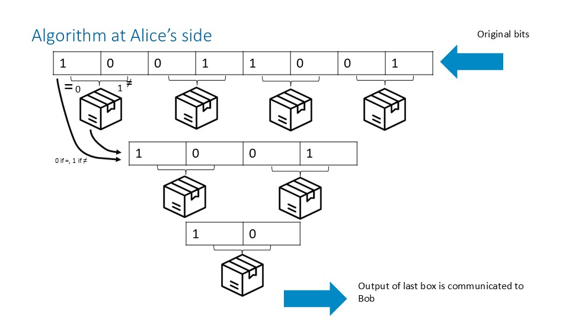
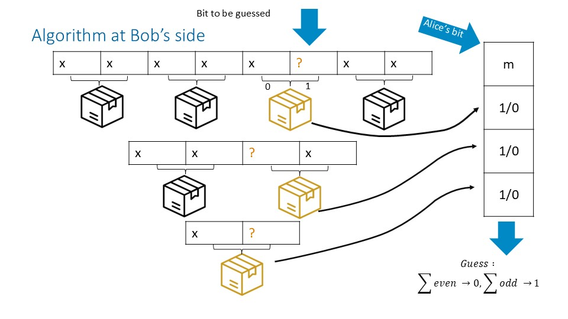

Pyramidal Algorithm in Classical Random Access Codes (RACs)¶
Overview¶
In the Information Causality random access task, Alice holds \(N = 2^n\) bits and Bob is asked to output one target bit \(a_b\) given an index \(b\). Alice may send a single classical message bit \(c\) to Bob, and Alice and Bob may also use pre-shared no-signaling resources (PR-boxes / shared resources). Pawlowski et al. describe a recursive "pyramid of boxes" protocol (Figure 3 caption in [1]) that nests the \(2 \to 1\) protocol across \(n\) levels.
In QSeaBattle, we implement this nested protocol as a deterministic "teacher" rule-set that maps the game state to (i) measurement settings for Alice and Bob at each level, (ii) updated internal state ("gun") for the next level, and (iii) an updated one-bit communication value. This document specifies the algorithm as implemented, while referencing the recursive intent described by Pawlowski et al. [1]
The Pyramidal Algorithm¶
State and notation¶
- Let \(n^2 = \texttt{field\_size}^2\) be the number of field bits.
- Let \(x \in \{0,1\}^{n^2}\) be Alice's input field bits.
- Let \(g \in \{0,1\}^{n^2}\) be the "gun" vector, assumed one-hot (exactly one entry equals \(1\)).
- Let \(c \in \{0,1\}\) be the current one-bit communication value.
- Let \(s \in \{0,1\}^{n^2/2}\) denote the shared-resource outputs for a level after Bob's measurement (one output per pair index \(i\) on that level).
- Indices are grouped into pairs \((2i, 2i+1)\) for \(i = 0,1,\dots,(n^2/2)-1\).
Level transition rules¶
At each pyramid level, we reduce the effective field size by pairing indices and producing a new reduced state.
1) Alice measurement \(m_i(A)\) from the input field¶

For each pair \((x_{2i}, x_{2i+1})\), Alice produces a measurement bit: $$ m_i(A) = x_{2i} \oplus x_{2i+1}. $$
Interpretation in the implementation: - If the pair bits are equal, then \(m_i(A)=0\). - If the pair bits differ, then \(m_i(A)=1\).
2) Alice combine rule \(f'_i\) (pair compression)¶
For each pair index \(i\), Alice defines the reduced field bit (for the next level) as: $$ f'i = x \oplus s_i, $$ where \(s_i\) is the shared-resource outcome associated with pair index \(i\).
Interpretation in the implementation: - The reduced bit uses the even-index field bit \(x_{2i}\) and is optionally flipped by the shared-resource outcome. - This mirrors the nesting idea in Pawlowski et al., where intermediate one-bit "messages" get re-encoded at higher levels.
3) Bob measurement \(m_i(B)\) from the gun pair¶

Bob's measurement (as implemented) is driven by the current one-hot gun state \(g\). For each gun pair \((g_{2i}, g_{2i+1})\), define: $$ m_i(B) = \lnot g_{2i} \wedge g_{2i+1}. $$
Interpretation in the implementation: - \(m_i(B)=1\) if and only if the gun pair equals \((0,1)\). - Otherwise \(m_i(B)=0\).
4) Gun update \(g'\)¶
We compress the gun to the next level using XOR on each pair: $$ g'i = g. $$} \oplus g_{2i+1
Interpretation in the implementation: - If the gun pair is \((0,0)\) or \((1,1)\), then \(g'_i=0\). - If the gun pair is \((0,1)\) or \((1,0)\), then \(g'_i=1\). - If \(g\) is one-hot, then \(g'\) is also one-hot.
The one-hot invariant on \(g\) is assumed at all levels, and the update \(g'_i = g_{2i} \oplus g_{2i+1}\) preserves it.
5) Shared-resource usage and communication-bit update¶
Bob's measurement choice (informally, "Phigh" vs "Plow") produces a shared-resource output vector \(s\) for the current level. This output is not required to equal Alice's shared-resource outcomes, and it is used only to update the one-bit message \(c\).
Let \(g'\) be the next-level (one-hot) gun vector and \(s\) the current-level shared-resource output vector (indexed by pair index \(i\)). The updated communication bit is: $$ c' = c \oplus \left(\sum_i g'_i s_i\right) \bmod 2. $$
Interpretation in the implementation: - Because \(g'\) is one-hot, the sum selects exactly one component \(s_{i^*}\) where \(g'_{i^*}=1\). - If the selected shared-resource bit is \(1\), the communication bit is flipped; otherwise it is unchanged. - The shared resource does not affect the gun state; it affects only the message bit.
Relationship to the Pawlowski et al. Pyramid (Conceptual Mapping)¶
Pawlowski et al. describe a recursive construction that nests the \(2 \to 1\) protocol across \(n\) levels using \(N-1\) boxes for \(N=2^n\) input bits. Bob's final guess is an XOR of Alice's transmitted bit with one box output per level, and correctness reduces to having an even number of intermediate errors.
In QSeaBattle, the nesting is realized operationally as repeated application of the level transition rules above: - Pairwise reduction of the field (\(x \mapsto f'\)). - Pairwise reduction of the index state via the one-hot gun update (\(g \mapsto g'\)). - One-bit message update (\(c \mapsto c'\)) driven by the shared-resource output at the active next-level gun index.
This implementation focuses on producing imitation targets for trainable layers, rather than reproducing every paper-specific variable name or diagram element.
Conditions and Limitations¶
- The gun vector is assumed to be one-hot at all levels.
- The implementation uses fixed odd/even pairing \((2i,2i+1)\) at each reduction step.
- The shared-resource output influences only the communication bit and never the gun update.
- The mapping from Bob's measurement choice ("Phigh" vs other setting) to the distribution of \(s\) is handled by the shared-resource component; this document specifies only how \(s\) is consumed.
QSeaBattle implementation notes¶
- This pyramidal algorithm is used as an assisted strategy for players derived from the class
PRAssistedPlayers - The algorithm is also used to generate datasets (imitation targets) for trainable components. Functions to generate these datasets are found in
pyr_trainable_assisted_imitation_utilities
Key Reference¶
- Pawlowski et al., "Information Causality as a Physical Principle", arXiv:0905.2292 (v3, 6 May 2010). The pyramid protocol is described in the caption of Figure 3.